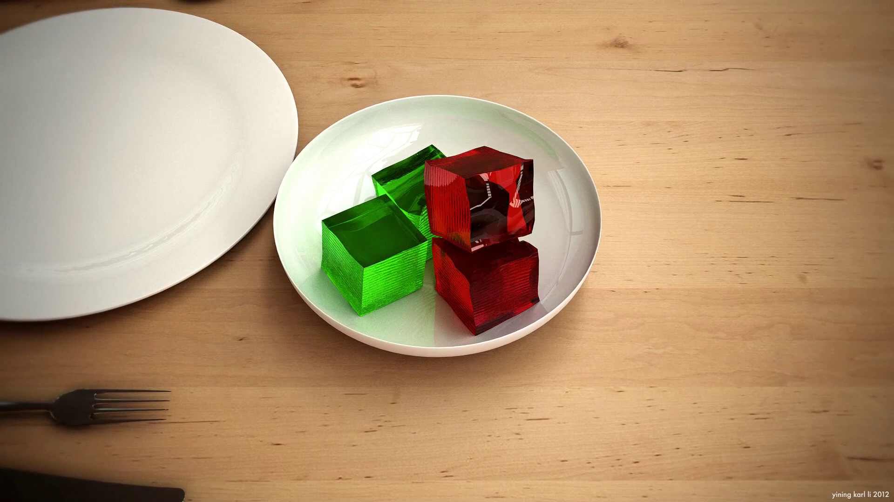

Multiple Interacting Jellos
A mass-spring system designed to simulate multiple interacting blocks of jello

A frame from a simulation of four jello cubes interacting with each other and a glass pitcher. All simulation work was done entirely with my simulator, rendering was done with Vray.
Overview
One of the spring 2012 CIS563: Physically Based Animation assignments was a mass-spring damper system capable of simulating a single jello cube interacting against a plane. I took that project and extended it to allow for complex multiple jello interactions, interactions against arbitrary mesh scenes, Maya integration, multithreading, better integration methods, KD-Tree acceleration for intersection testing, and more. This project is written entirely in C++.
Base Code
This project utilizes base code written by Aline Normyle for CIS563: Physically Based Animation.
Features
Mass-spring Damper System: The simulator models jello cubes as a lattice of masses connected with a variety of springs acting as constraints on shearing, compressing, and bending. Stiffness for each spring type can be specified at simulation initialization and can also be modified on the fly at runtime for more art-directable behavior.
Multiple Integration Schemes: The simulator supports Euler, Midpoint, and fourth-order Runge-Kutta integration to solve the equations of motion in a discretized fashion. Integration schemes can be specified at simulation initialization and can also be modified on the fly at runtime to deal with any stability issues. The time step of the simulation can also be modified on the fly.
Arbitrary Surfaces: In addition to support for jello interaction against planes, spheres, cylinders, and boxes, the system also supports interaction against arbitrary geometry loaded in as OBJ meshes. Meshes can also be dynamically unloaded and swapped out for different meshes, allowing for jello cubes to interact against a dynamic, changing, animated scene.
Live Preview: The simulator comes with an OpenGL preview complete with interactive camera and built in screen recording and spring debugging tools.
KD-Tree Acceleration: A KD-Tree is used for accelerating intersection tests between jello vertices and scene surfaces. Rapid KD-Tree reconstruction is done every frame to account for changing jello positions and changing scene geometry.
Inter-jello Interaction: Jello cubes can interact with each other instead of passing through each other. The simulator solves a single jello cube at a time while treating all other jellos in the scene as static meshes. Support for stacked jello is also included by having the simulator sort jello order by closeness to the ground before solving.
Maya Integration: Maya integration is supported through a Python script that wraps the simulator and modifies vertex positions for cube meshes in Maya correspondingly. Simulations can also be exported as OBJ sequences for use in Maya and other programs.
Architecture: The simulator has been modified from the original base code extensively; GLM is used as the math library instead of the original custom library, and various modifications have been made to allow for compilation without modification on Windows, OSX, and Fedora Linux. The live preview mode was also modified to use stb_image for image sequence output instead of DevIL. Multithreading through OpenMP was also added.

A frame from a simulation of four jello cubes interacting with each other and a ceramic bowl. All simulation work was done entirely with my simulator, rendering was done with Vray.
Four jello cubes interacting with each other and with a glass pitcher. The simulation was created entirely in my simulator, then exported to Maya with my Python wrapper, and rendered out with Vray on my standard studio lighting setup.
Four jello cubes interacting with each other and with a bowl inside of my Kitchen scene. The simulation was created entirely in my simulator, then exported to Maya with my Python wrapper and rendered with Vray.
A collection of videos directly from within the simulator's GL Preview view, demonstrating various capabilities of the simulator.
Acknowledgements
This project would not be possible without the guidance of Dr. Joseph T. Kider, the instructor for CIS563 in the spring of 2012. I would also like to thank CIS563 TAs Tiantian Liu and Peter Kutz. Friends Gabriel Leung, Adam Mally, and Dan Knowlton acted as sounding boards for various ideas and discussed ideas.
Project Blog Posts
Progress updates for this project were posted to my development blog, Code & Visuals. The following posts detail the development of this project. Posts are listed starting with the most recent:
Resources
In the process of building my simulator, I drew upon the following papers, and articles. They are listed in no particular order.
Physically Based Modeling SIGGRAPH 2001 Course Notes: A primer on differential equation basics, particle dynamics, and implicit integration techniques by Andrew Witkin, David Baraff and Michael Kass.
Particle Systems: A Technique for Modeling a Class of Fuzzy Objects: The original 1983 William Reeves paper introducing particle systems
Implicit-Explicit Schemes for Fast Animation with Particle Systems: A 2010 paper on integration schemes by Bernhard Eberhardt, Olaf Etzmuss, and Michael Hauth.
Implicit-Explicit Runge-Kutta Methods for Time-Dependent Partial Differential Equations: A 1997 paper describing using RK4 integration for solving equations of motion by Uri Ascher, Steven Ruuth, and Raymond Spiteri.
Runge-Kutta Methods Wikipedia Article: A fairly concise summary of the Runge-Kutta integration schemes, including RK4
Effective Mass Wikipedia Article: A fairly concise summary of spring-mass systems
{kind=link}